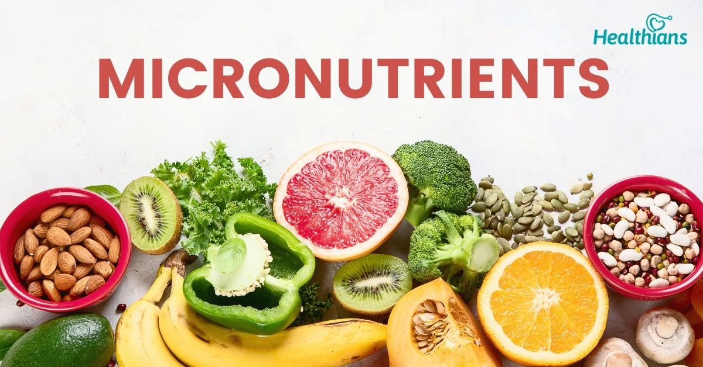

Nutrition
Food is needed for its vital functions: growth, repair, and energy. It is the "engine of the human body." Within nutrients, there are two branches: macronutrients and micronutrients.

The nutrition is the source of energy for the human body. Have a good nutrition is really important!
Macronutrients and micronutrients
Macronutrients
The macronutrients are made up of carbohydrates, proteins and fats.

The carbohydrates are a fast source of energy for excercise and brain. They can be found in raise, potato, etc.
Proteins are used for the body to build build and repair tissues. Like muscles, skin, hormones, etc.
And the fats, are like a storage of energy for the body.
Micronutrients
The micronutrients are made up of vitamin and minerals.
The vitamins helps in process like vision, energy, inmunity, coagulation, etc.
Minerals like Calcium are needed to strengthen bones, iron is needed for blood, potassium is needed for the nervous system, sodium is needed for blood pressure, and so on.
Other important things
Water

Hydration is essential for the human body because water supports vital functions like temperature regulation, nutrient transport, and joint lubrication. Without proper hydration, physical and mental performance can decline rapidly, leading to fatigue, headaches, and more serious health issues.
Exercise
Exercise is essential for nutrition because it helps the body effectively use the nutrients consumed, supporting muscle growth, energy balance, and metabolism. It also improves insulin sensitivity and digestion, enhancing how the body absorbs and stores nutrients.